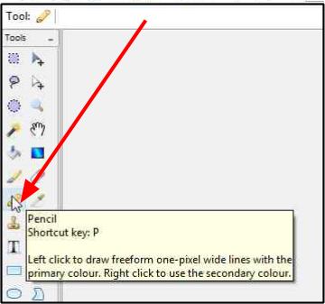
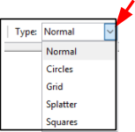
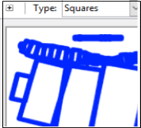

Choose Pencil or Brush¶
Pinta provides two tools for drawing (painting) directly to the image: The Pencil tool and the Brush tool.
The Pencil tool uses a hard edge and there is only one width and type of pencil. Whereas the Brush tool can be used to paint with smooth edges and you can change the brush width and type of brush (normal, circles, grid, splatter and squares).
Before selecting a pencil or brush, it is recommended to add a new layer to the workpage so that it is easier to isolate/edit your pencil and brush stokes in the future.
How to Select a Pencil¶
-
Select the Pencil tool
 from the Tools menu.
from the Tools menu.
How to Select a Brush¶
-
Select the Brush tool
 from the Tools menu.
from the Tools menu.
-
Select the desired brush width (1-55) from the Brush width menu options.

-
Select the desired brush type from the Type menu options.

Brush Type When Use? Example Normal Simple brush stroke 
Circles Circular brush strokes 
Grid Grid-like brush strokes 
Splatter Splatter brush strokes 
Squares Square brush strokes 